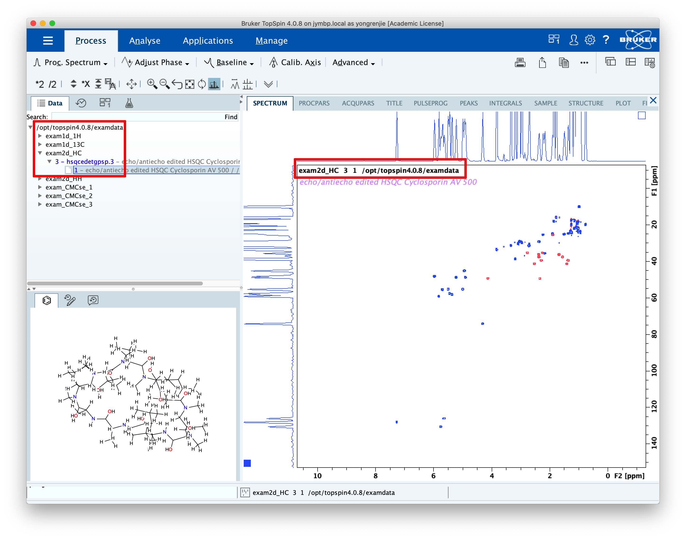

TopSpin directories¶
Bruker NMR data are organised in a predictable manner. Each spectrum has an associated name, expno (experiment number), and procno (processing number), as can be seen in TopSpin itself.
In this screenshot, the name is exam2d_HC, the expno is 3 and the procno is 1. In terms of the file system, the directories are laid out in this way:
/
└── opt
└── topspin4.0.8
└── examdata
└── exam2d_HC <------------- [[NAME]]
├── 3 <----------------- [[EXPNO]]
│ ├── ser
│ ├── acqu
│ ├── acqus
│ ├── pdata
│ │ ├─── 1 <-------- [[PROCNO]]
│ │ │ ├── 2rr
│ │ │ ├── proc
│ │ │ ├── procs
│ │ │ └── ...
│ │ └─── (other procnos would go here...)
│ └── ...
└── (other expnos would go here...)
In the remainder of the documentation, the following terminology is used:
The spectrum folder refers to the folder which corresponds to the name, i.e.
/opt/topspin4.0.8/examdata/exam2d_HC.The expno folder refers to the folder which corresponds to the expno, i.e.
/opt/topspin4.0.8/examdata/exam2d_HC/3.The procno folder refers to the folder which corresponds to the procno, i.e.
/opt/topspin4.0.8/examdata/exam2d_HC/3/pdata/1.
Notice also that the remaining files are organised in a logical way. For example, status acquisition parameters are stored in acqus, which is found in the expno folder, since these parameters do not depend on how the spectrum was processed. Likewise, the raw data in the ser file is also found in the expno folder. On the other hand, the status processing parameters procs are in the procno folder, and so is the doubly real part of the spectrum, 2rr.
“Status” parameters (acqus and procs) refer to the parameters that have actually been used to acquire or process the data, as opposed to the parameters that have been entered into TopSpin’s settings (acqu and proc). For example, if an experiment is ran with NS set to 64 but is prematurely terminated after 24 scans, the acqu file will report that NS is 64, but acqus will have the more meaningful value of 24.